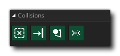

Lors de la planification de mouvements ou de la décision de certaines actions, il est souvent important de déterminer s'il existe des collisions avec d'autres objets à certains endroits du monde du jeu. Choisir la bonne collision pour le travail est souvent la tâche la plus importante. GameMaker Studio 2 comporte un certain nombre d'actions pour vous aider à gérer les collisions correctement et conformément aux besoins de votre projet:
 | Si un objet à la place |
 | Si objet à la place |
 | Si forme de collision |
| Si le point de collision |